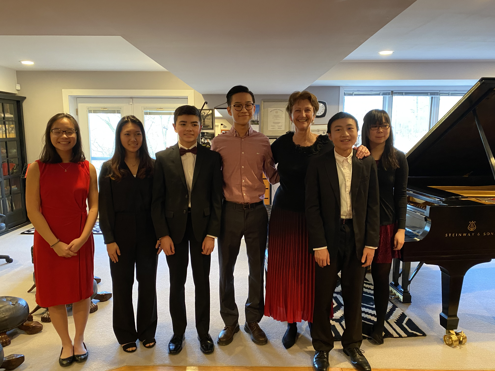
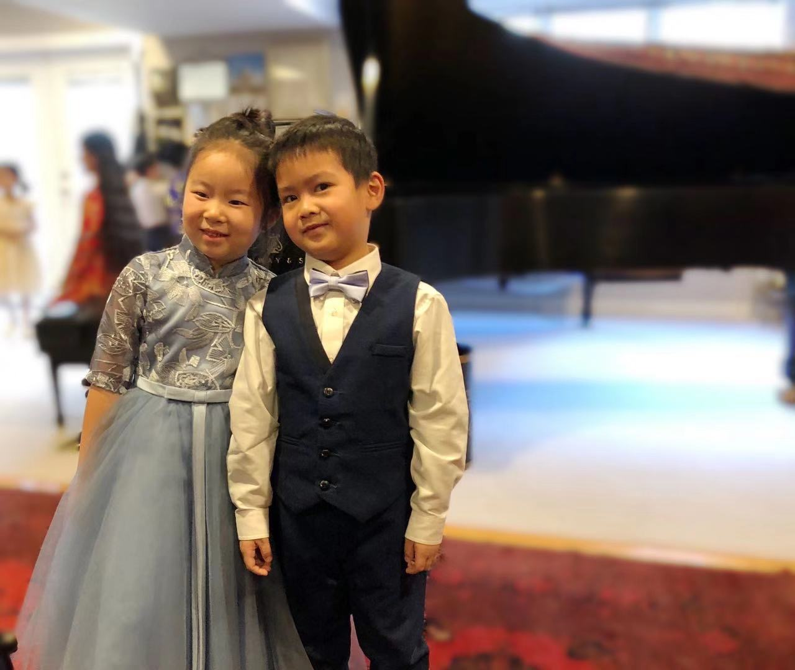
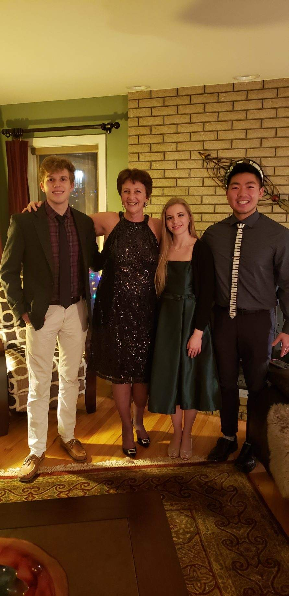

Pictures and Videos
Beethoven: Choir Fantasie
Student Videos and Photos
Chopin Polonaise in C# Minor Op. 26, No. 1, 2020 by Alex Urling
Liszt Valse Impromtu A flat major, 2020 by Annie Wang
My wonderful advanced students! From left to right: Emma Kim, Rachel Lee, Alex Urling, Oliver Choo, Gary Peng, and Monica Chen
Delphina Chen and her duet partner, Lucas Liao
My alumni students. From left to right: Christopher Fedor, Caroline Fedor, and Michael Tsang
|
|